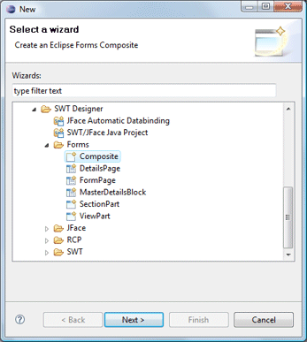
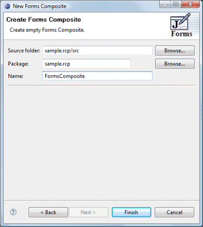

To use the wizard, select the project source folder and package to contain the class. Then enter the class name and hit the Finish button.
For more information on using Eclipse Forms, see the Eclipse Forms Programming Guide.


The wizard generates the following code.
import
org.eclipse.swt.widgets.Composite;
import org.eclipse.swt.widgets.Display;
import org.eclipse.ui.forms.widgets.FormToolkit;
public class FormsComposite extends Composite {
private final FormToolkit toolkit = new FormToolkit(Display.getCurrent());
public FormsComposite(Composite parent, int style) {
super(parent, style);
toolkit.adapt(this);
toolkit.paintBordersFor(this);
}
}
When editing SWT Composites, all of the standard SWT layouts, containers, widgets and menus are available. Custom or third party controls may be added via the Choose Component command.
Use the Expose property... command added to property pane context menu to expose any widget property as a public property of the class. Use the Expose component... command added to the popup menu in the Design View to add an accessor for any widget.